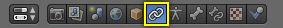
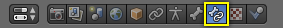

简介¶
约束是一种使用静态数值 (如 "限制类" 约束), 或者称作"目标"的其他对象(如 "复制类" 约束)，控制对象属性(例如其位置、旋转、缩放)的方法。
即使在静态项目中，约束都是非常有用的，其主要用途显然是动画。
- 可以通过其约束所使用的目标来控制物体的动画（这是间接动画的一种形式）。事实上，这些目标可以控制约束的所有者的属性，因此，动画目标将间接驱动其所有者。
- 可以驱动约束的设置，如 Influence影响 ，或者在使用骨架的骨骼作为目标时，驱动沿着该骨骼(根部和尖端之间)分布的真正目标点。
约束可以使一个网球运动员眼睛跟踪网球弹跳地穿过球场，可以让一辆巴士所有车轮一起旋转，可以帮助一只恐龙的腿在膝盖处自动弯曲，或者轻松地让手握住剑柄并挥动剑。
在Blender里，约束作用于 对象 和 骨骼 。在 骨架章节 阅读约束在绑定中的使用。

物体约束。

骨骼约束。
约束可以相互组合，形成一个约束堆栈。

约束堆栈是从顶部到底部进行运算的。
Tips 小贴士¶
约束是一种神奇的方式，能够给绑定增加成熟度和复杂性。
但不要急着这么做，在搞不清楚约束之间如何交流的时候，就不要再叠加约束了。
先从简单的开始。从里到外了解一个单一约束。Copy Location Constraint 复制位置约束 作为第一个探索的约束就不错，它还有一个动画示例。花时间去了解它背后的每一个基本概念，对其他的约束将有更多的理解感觉。